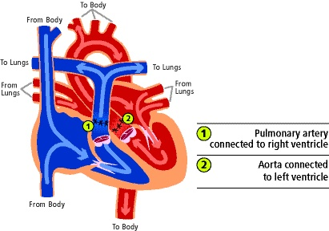
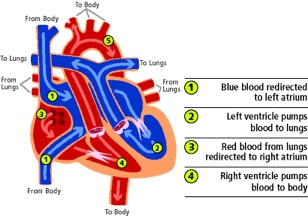

疾病與血流解剖見 TGA。本篇以 d-TGA 為主；ccTGA／l-TGA 的 double switch 是另一套個別規劃，不能只套 ASO。
術前先穩定：Mixing before switching
flowchart TD
A["d-TGA：兩循環平行"] --> B["支持呼吸／灌流<br/>PGE1＋緊急 echo"]
B --> C{"混合與氧輸送足夠？"}
C -->|"不足且心房通道受限"| D["緊急 BAS"]
D --> E["重評混合、灌流<br/>與肺血管狀態"]
C -->|"足夠"| F["穩定監測與手術準備"]
E --> F
F --> G["ASO 或個別解剖術式"]
G --> H["終身先天性心臟追蹤"]
圖 3｜BAS 不是每例必經；是否做取決於心房交通與實際混合。若 BAS 後仍持續嚴重缺氧／休克，必須立即找原因並升級支持，不是照流程等候擇期手術。
| 問題 | 術前支持 | 監測與界線 |
|---|---|---|
| 維持可用的混合通道 | 持續 IV PGE₁（alprostadil）維持 patent ductus arteriosus（PDA），同步 echo 評估 | 留意呼吸暫停與低血壓；用專用管路與輸注幫浦，不可 bolus／沖洗藥物管路。劑量依新生兒醫囑與反應調整。[3] |
| 心房混合受限 | 評估緊急 BAS，不能只不斷加氧或等待 PGE₁ | PDA 開放不保證能彌補受限 ASD／PFO |
| 低氧輸送／休克 | 呼吸支持、維持適當循環容量與灌流，依病況使用加護支持 | 合看 lactate、酸鹼、尿量、末梢灌流與血氧；避免只把 SpO₂ 正常化當目標 |
| 轉送與呼吸道 | 由新生兒／兒童心臟團隊規劃 | 不因正在用 PGE₁ 就一律插管；有呼吸暫停、呼吸衰竭或不穩定者另作處理 |
| BAS 後 | 重評是否仍需 PGE₁，若可減量，監測下逐步調整 | 不自行突然停藥；部分病人仍需要 PDA，且可有 rebound hypoxemia |
| 餵食與營養 | 穩定後個別安排餵食；低灌流、呼吸不穩或即將處置者另訂計畫 | 依循環及腸道灌流狀態，不能一律禁食或一律照常餵食 |
依 EACTS／AEPC 的穩定治療原則與院內實際生理調整；PGE₁ 的管路與副作用規範參考 NeoMedQ。[1:1][3:1]
BAS：把心房混合通道打開
Balloon atrial septostomy（Rashkind procedure） 是導管橋接處置：在影像導引下擴大心房中隔交通，讓肺靜脈回來的含氧血更容易進入體循環。它沒有改變 Ao／PA 的錯誤連接。[4]
| 項目 | 重點 |
|---|---|
| 主要適應情境 | ASD／PFO 受限，混合不足而缺氧或灌流不佳；是否需預先處理依個案與中心計畫 |
| 看懂操作的程度 | 血管進入 → 導管跨過心房交通 → 以球囊擴大 → 超音波確認交通與血流 |
| 成效判讀 | 心房交通變得足夠，且氧輸送／灌流改善；不能只看「洞已變大」 |
| 主要風險 | 心律不整、血管／心房損傷、穿孔與心包填塞 |
| 術後仍缺氧 | 重新看 ASD、PDA、pulmonary hypertension、心輸出與其他病變；不能假設只需再加氧 |
導管細節由兒童心臟介入團隊執行；不是一般 bedside 穿刺操作。[5][6]
ASO：完整矯正後的解剖

圖 4｜Arterial switch 後：① pulmonary artery 接回 right ventricle（RV）；② aorta 接回 LV。原圖：University of Michigan Health／C.S. Mott Children’s Hospital；取自 OpenAnesthesia 圖 4，未修改。
| 要完成的重建 | 血流／解剖結果 |
|---|---|
| 大動脈重新接合 | LV → Ao，RV → PA；恢復肺循環與體循環串聯 |
| Coronary transfer | 冠狀動脈開口重新植入 neo-aortic root，確保心肌血流；是關鍵風險所在 |
| 原瓣膜／根部角色改變 | 原 pulmonary valve 成為 neo-aortic valve；原 aortic valve 成為 neo-pulmonary valve |
| 處理伴隨交通／病變 | 依術式處理 ASD、VSD、PDA 或主動脈弓等，不能假定所有病人完全相同 |
適應症與時機：何時不能直接套標準 ASO
| 情境 | 方向 |
|---|---|
| 典型 d-TGA／IVS，LV 可負荷體循環 | 新生兒期 primary ASO；無法維持混合／灌流時可能需更緊急處理 |
| d-TGA＋可處理的 VSD／主動脈弓病變 | 依解剖合併修補，時機與技術個別規劃 |
| 延遲就診、LV 失去足夠壓力負荷 | 評估 LV 質量、形狀與功能；可能需分期 LV training 或其他支持，不能只用日齡判定可否 ASO |
| d-TGA＋VSD＋顯著 LV outflow tract obstruction（LVOTO） | ASO 未必合適；可能改採 Rastelli 等重建，取決於 VSD 與流出道／冠脈解剖 |
| ccTGA／l-TGA | 另評估合併 VSD、流出道、systemic RV／三尖瓣與傳導問題；部分個案考慮 double switch |
手術時機的專業指引主要針對 TGA/IVS；複雜型與延遲就診者不能直接套同一日齡規則。[1:2][2:1][7][8]
不同 Switch 與替代術式

圖 5｜Atrial switch 的 baffle 改變心房內的血流去向；大動脈仍原位，RV 仍負責體循環。原圖：University of Michigan Health／C.S. Mott Children’s Hospital；取自 OpenAnesthesia 圖 3，未修改。
| 術式 | 改哪裡 | 體循環由誰負責／後續重點 |
|---|---|---|
| Arterial switch（Jatene） | 大動脈與冠脈連接 | LV；注意冠脈、neo-aortic valve／root 與肺動脈狹窄 |
| Atrial switch（Mustard／Senning） | 心房內 baffle：體靜脈 → LV／PA；肺靜脈 → RV／Ao | RV；注意 systemic RV failure、三尖瓣逆流、baffle 狹窄／漏與心律不整。多見於既往手術病人，現今僅選定情境 |
| Rastelli（選定 TGA＋VSD＋LVOTO） | 心內通道使 LV 經 VSD 通往 Ao，另以 RV–PA conduit 供應肺血流 | LV；要追蹤心內通道與 conduit，可能需再次介入 |
Atrial switch 可以改善循環，但與 ASO 的解剖、長期負荷不同。Rastelli 等複雜型重建依個別解剖選擇，不能只看到 TGA 名稱就決定。[4:1][2:2][8:1]
術前評估與手術步驟概要
| 評估項目 | 為什麼會改變決策 |
|---|---|
| Echocardiography：心房交通、VSD、PDA、瓣膜、心室、弓部 | 確認混合及需要一併修補的病變 |
| 冠狀動脈開口與走向 | 影響 coronary transfer；必要時補充影像，由專科評估 |
| LV 準備度 | 延遲就診者尤其重要，避免突然承擔體循環後衰竭 |
| 呼吸、血氧／灌流、lactate、器官功能 | 判斷穩定程度及術後支持需求 |
| 血球／電解質／腎功能／凝血、備血、感染與營養 | 規劃體外循環、止血與復原 |
- 全身麻醉、胸部進路，建立 cardiopulmonary bypass（CPB）。
- 在適當位置分離大動脈，準備冠狀動脈開口的移植。
- 重建 neo-aorta 與 coronary connections；依解剖常以 Lecompte maneuver 將肺動脈分支置於主動脈前方，完成肺動脈重建。
- 處理相關中隔交通／伴隨病變；離開 CPB 前後評估冠狀動脈灌流、心室功能、瓣膜及吻合處血流。[2:3][6:1]
術後路徑與 must-call thresholds
| 階段 | 要盯的 | 立即回報／升級 |
|---|---|---|
| 加護初期 | ECG、心室功能、血壓／灌流、lactate、尿量、引流與出血 | 新發 ST 變化、壁運動異常、lactate 持續上升、低心輸出、嚴重心律不整或疑似 Cardiac tamponade |
| 穩定後 | 依心肺狀態減少呼吸／循環支持，調整液體與營養 | 無法減少支持、灌流不佳、肺水腫、餵食不耐或殘餘病變 |
| 出院前 | Echo／ECG 與臨床狀態作基準，藥物、餵食與傷口照護，確定回診 | 症狀或影像疑似冠脈／吻合處問題需先處理 |
| 長期 | 心室、neo-aortic valve／root、肺動脈與冠脈；依需要安排額外影像／功能測試 | 昏厥、胸痛、運動能力下降或新心律不整，不能以「小時候修好了」忽略 |
復原時程與管路移除依實際生理調整，不固定以術後第幾天作唯一門檻；所有 repaired TGA 都需終身先天性心臟追蹤。[4:2]
禁忌與陷阱
相關連結與來源
- TGA — 疾病與原始解剖
- Pediatric heart disease · Cardiac Surgery — 索引
- TOF correction · Pulmonary atresia intervention — 其他發紺心臟病的治療路徑
EACTS／AEPC：TGA with IVS 指引，2017，§4–5；穩定、BAS、PGE₁ 調整與 ASO 時機。 ↩︎ ↩︎ ↩︎
Texas Children’s Hospital Handbook：Transposition of the Great Arteries，ch.14，pp.95–104；LV training、ASO、手術與監測原則。 ↩︎ ↩︎ ↩︎ ↩︎ ↩︎
Queensland NeoMedQ：Alprostadil，2026-05-29；給藥管路與心肺監測。 ↩︎ ↩︎
Cincinnati Children’s：TGA，2025-07；BAS 與 ASO 後瓣膜角色。 ↩︎ ↩︎
OpenAnesthesia：d-TGA；圖 3、4 原作者為 University of Michigan Health／C.S. Mott Children’s Hospital，並有 BAS 風險與 ASO 解剖說明。 ↩︎ ↩︎
AHA：l-TGA／ccTGA，檢視日期 2026-04-15；個別治療與 double switch。 ↩︎
Adult Congenital Heart Association：TGA after arterial switch or Rastelli procedure；Rastelli 的心內通道與 RV–PA conduit，以及術後追蹤。 ↩︎ ↩︎